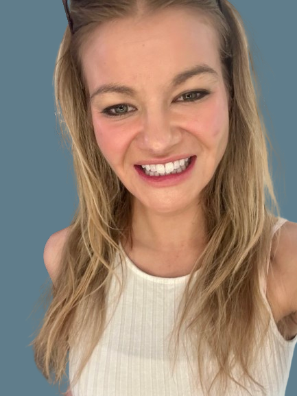

Data Scientist & ML Engineer
Data scientist with a background in healthcare and biotechnology, and an MS in Data Science from CU Boulder (May 2026). I build models that turn clinical complexity into actionable insight.

About
I'm a data scientist with an MS in Data Science from the University of Colorado Boulder (May 2026) and a decade of experience in pharmaceutical sales, clinical operations, and lab work. That combination of deep domain knowledge and rigorous ML training is what sets my work apart.
I build models that matter. My projects span breast cancer subtype classification, histopathology and dermatological imaging CNNs, NLP with transformers for marketing applications, geospatial public health analysis, and more. I care about getting the evaluation right, not just the accuracy number, especially in clinical contexts where the stakes are real.
Outside of work, I enjoy trail running, mountain biking, skiing, meditation, and yoga.
I am actively looking for data scientist, ML engineer, or decision scientist roles on teams focused on drug development, early disease detection/diagnostics, or translational medicine. If that's you, let's talk.
Portfolio
Applied machine learning, deep learning, and statistical analysis across healthcare, NLP, and public data domains.
Supervised Machine Learning · Capstone
Classified TNBC molecular subtypes (BL1, BL2, M, LAR) using TCGA-BRCA RNA-seq data across 175 samples. Evaluated AutoGluon, Random Forest, XGBoost, and SVM. Best result: 40% accuracy with macro F1 of 0.361, prioritizing F1 given clinical imbalance stakes. Identified AR status as highest priority future biomarker addition.
Supervised Machine Learning
Built and evaluated a Random Forest classifier to predict heart attack risk from patient health data. Includes full model report and reproducible code.
MSDS-5511 · Deep Learning
CNN trained on 327,680 sentinel lymph node biopsy images (Kaggle PCam / PatchCamelyon dataset) to detect metastatic cancer spread. All patients in the dataset have cancer. The binary classification task is determining whether the cancer has invaded the lymph nodes, a critical indicator of staging and systemic spread. Implemented data augmentation and class balanced training to handle label imbalance.
MSDS-5511 · Deep Learning
Multi-class skin lesion classification using the HAM10000 dermatology dataset. Explored transfer learning with pretrained CNNs and evaluated performance across 7 lesion categories.
MSDS-5511 · Deep Learning
Implemented a CycleGAN to translate real world photographs into Monet-style paintings (Kaggle competition). Trained unpaired image to image translation without matched examples.
MSDS-5511 · Deep Learning
Fine-tuned a large language model to classify tweets as real disaster events vs. non disaster. Applied to the Kaggle NLP disaster tweets dataset using DistilBERT based architecture.
DTSA-5798 · Marketing Analytics
Health article text classification using ktrain and DistilBERT, achieving ~81% accuracy. Applied transformer-based NLP to categorize marketing content at scale.
MSDS-5510 · Unsupervised ML
Collection of unsupervised learning projects including PCA/NMF for gene expression cancer type prediction, recommendation systems (MovieLens collaborative filtering), clustering, and outlier detection.
Data Science Foundations
Exploratory and statistical analysis of COVID-19 trends using R Markdown. Visualizes case trajectories, mortality rates, and regional patterns with ggplot2.
Data Science Foundations
Statistical analysis and geospatial visualization of NYPD shooting incident data. Includes log fold change mapping to identify borough level disparities and temporal trends.
Capabilities
Technical toolkit built across graduate coursework, research, and applied projects.
Actively seeking data scientist, ML engineer, and decision scientist roles on teams focused on drug development, early disease detection/diagnostics, or translational medicine.